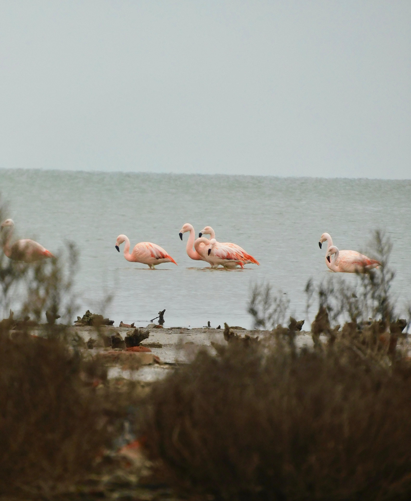
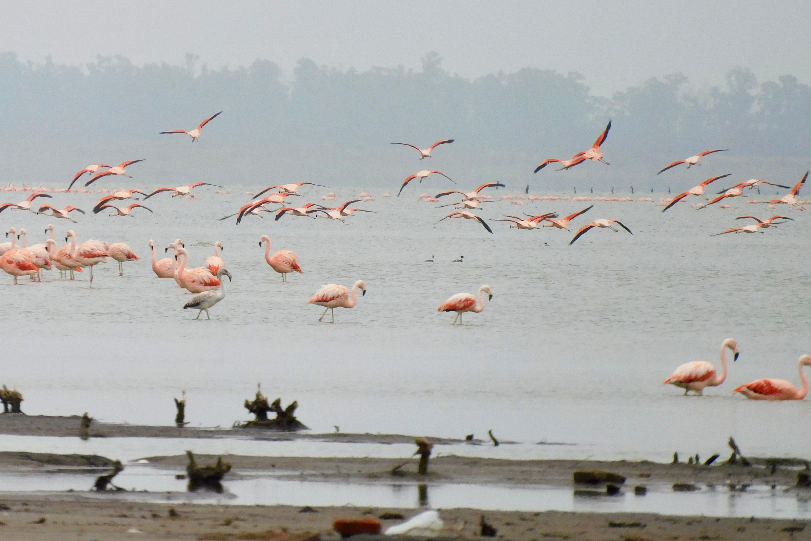
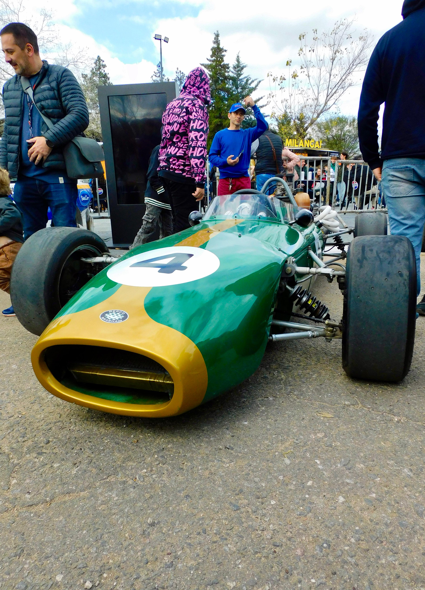
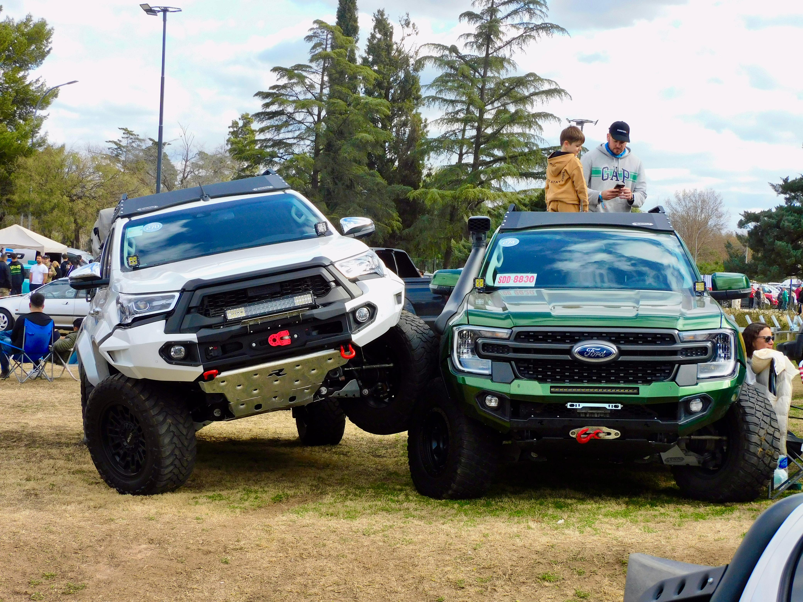
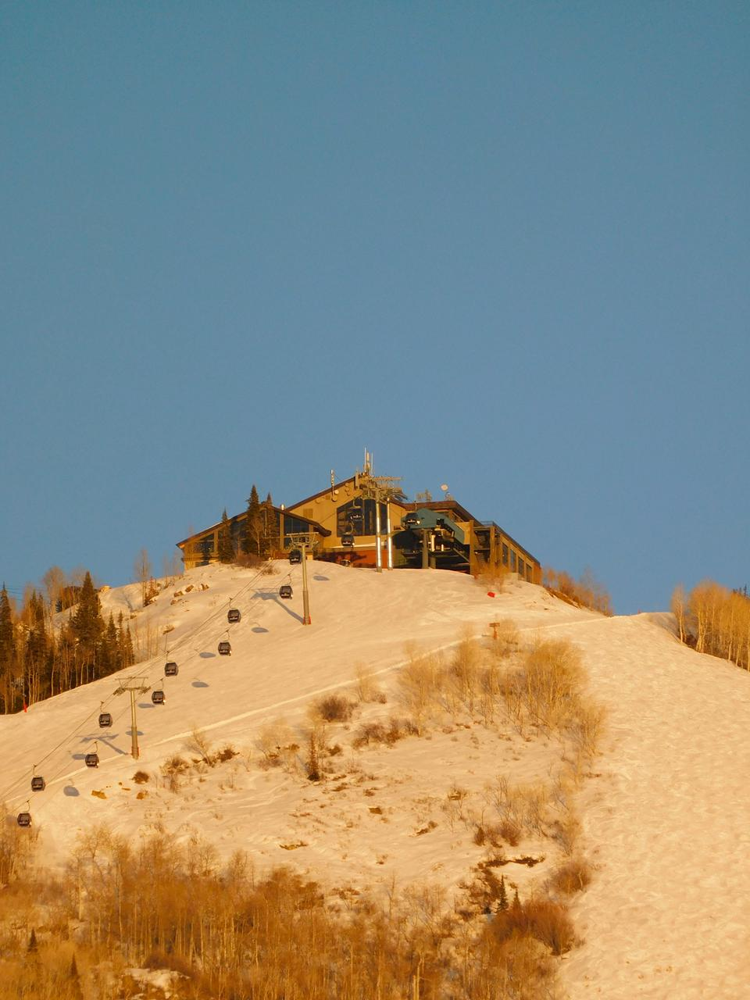

Deportes · Fauna · Automóviles · Paisajismo
Córdoba, Argentina · 2024–2026
TRABAJO RECIENTE





Fotógrafo apasionado por los deportes, paisajes, autos y fauna. Estudiante de Ingeniería en Sistemas en la Universidad Católica de Córdoba.